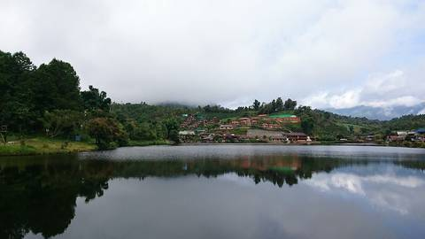
Ban Rak Thai
บ้านรักไทย
A village north of Mae Hong Son settled by Chinese Yunnanese, on a reservoir, with tea terraces and the border immediately behind it.
Viewpoints, caves, waterfalls, bridges, markets, memorials. The reason the ride takes four days and not two.

บ้านรักไทย
A village north of Mae Hong Son settled by Chinese Yunnanese, on a reservoir, with tea terraces and the border immediately behind it.
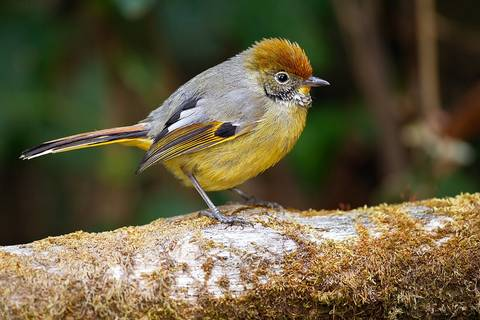
ดอยอินทนนท์
2,565 metres, in Chom Thong district, reached from Route 108 or from Mae Chaem over Route 1088. Not on the loop; one turn off it.
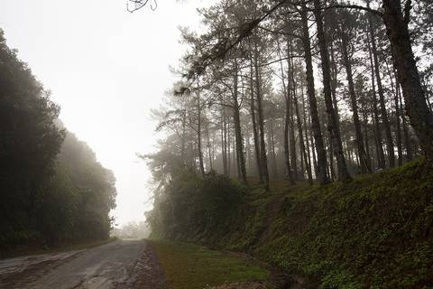
ห้วยน้ำดัง
A national park straddling the Chiang Mai and Mae Hong Son line, right on Route 1095, with a viewpoint that looks east over cloud at dawn.
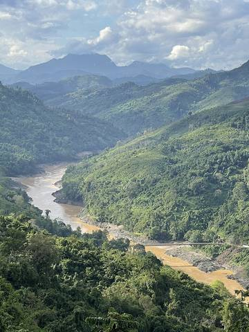
แม่สามแลบ และแม่น้ำสาละวิน
A river village west of Mae Sariang at the end of a side road, on the Salween where it forms the frontier.
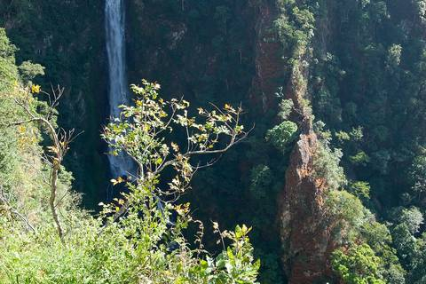
น้ำตกแม่สุรินทร์
A single-drop waterfall in Namtok Mae Surin National Park, in Khun Yuam district.
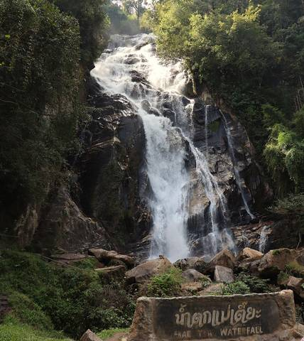
ออบหลวง
A gorge on the Chaem river in a national park on Route 108, roughly midway between Hot and Mae Sariang.
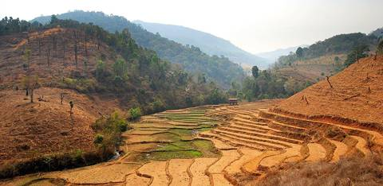
นาขั้นบันไดป่าบงเปียง
In Mae Chaem district, off the eastern end of the 1263 cut. One of the reasons to take the shortcut at all.
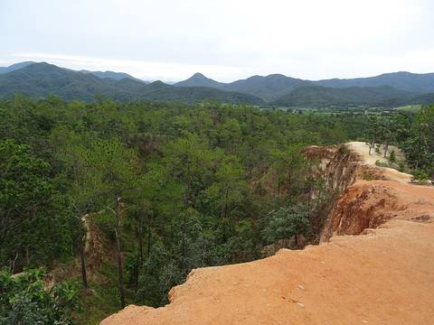
กองแลน
Kong Lan: narrow eroded sandstone ridges on the edge of the Pai basin, walked at sunset by most of the town.
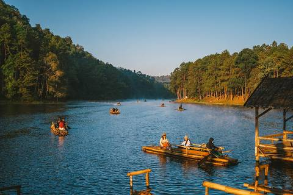
ปางอุ๋ง
A royal-project reservoir in the hills north-west of Mae Hong Son, reached by the same road system as Ban Rak Thai.
สะพานซูตองเป้
A long bamboo bridge over rice fields and a stream outside Mae Hong Son town, on the route toward Khun Yuam.
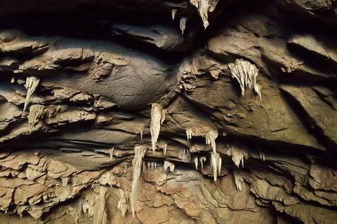
ถ้ำลอด
A limestone cave in Pang Mapha district with the Nam Lang stream running through it. Entered by lamp and by bamboo raft, with a local guide.
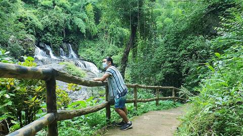
ถ้ำปลา
A spring-fed pool at a cave mouth north of Mae Hong Son town, in its own national park, holding a resident population of large barb.
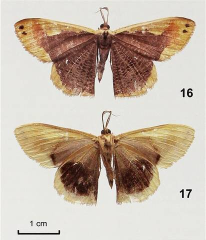
อนุสรณ์สถานมิตรภาพไทย–ญี่ปุ่น ขุนยวม
A memorial hall in Khun Yuam holding material from the Japanese presence in this district during the Second World War.
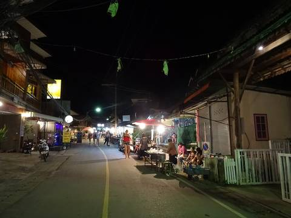
ถนนคนเดินปาย
Pai's evening market runs down the main street every night in the season: food stalls, music, and most of the town's visitors in one place.
1,132 rows inside the corridor, 747 of them with a name. These are not written up, not checked, and not endorsed — they are what volunteers mapped, on 2026-09-19. An absence here is an absence from OpenStreetMap, not from the road.
First 400 of 747. The rest are in places.json.